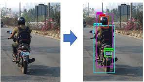

About me
Associate Data Scientist at JPL
Generative AI, Computer vision & NLP enthusiast
My interests lie in building end-to-end AI solutions in NLP, Computer Vision, and Multimodal domains.
I'm proficient in Python and experienced in using it for various tasks.
Currently working on projects based on Generative AI, Computer Vision, and NLP.
An agentic AI-powered chatbot designed to engage in meaningful, context-aware conversations by leveraging agents and Retrieval-Augmented Generation (RAG) pipelines. Built using LangGraph as the core framework, it orchestrates multi-agent workflows for complex reasoning and dynamic task execution. The system integrates LangChain for memory and tool management, along with tools like Ollama for local language model inference, enabling accurate, personalized, and responsive interactions suitable for a wide range of use cases.
Plant Disease
Detection System
A research-driven plant disease detection system using Convolutional Neural Networks (CNNs) to classify leaves as healthy or diseased. Evaluated across 8–10 model architectures, the final design employs five convolutional and max-pooling layers with two fully connected layers, achieving 95.5% accuracy. The system generalizes well on unseen data and provides treatment recommendations, showcasing its potential as an AI-powered solution for precision agriculture and early plant health diagnostics.
Built a government-focused AI chatbot that provides accurate, real-time answers related to public schemes and services. Implemented guardrails to reduce hallucinations, added profanity filtering, and optimized queries to enhance performance and relevance.
Fine-tuned a multimodal model to answer queries about traditional Indian attires based on image inputs. Enabled fashion recommendation and visual understanding capabilities by integrating image and text features for accurate responses.
Object Measurement
Using OpenCV
The entire project is built to measure the dimensions of any object like a Book, USB, Phone, etc. by using OpenCV and Aruco Marker in a very simple and easy manner. The project is divided into two parts: First, we detect the object using several CNNs and after that, we use canny edge detection techniques by OpenCV for measuring the dimension of an object.
Short Straddle
on BankNifty
It is a trading bot that trades in the stock market, we retrieve real-time data from Alice blue brokerage house using the API and after getting the data first we apply some filtering on the data then our model trades in the stock market.
Bulk Message Sender
Using Image

An OCR-powered automation system that extracts phone numbers from images using Optical Character Recognition (OCR) techniques and automatically sends WhatsApp messages to the extracted numbers. The system leverages the Selenium library to handle WhatsApp Web automation, enabling seamless communication without manual intervention. This project demonstrates the integration of image processing with browser automation for efficient and scalable messaging workflows.
motor cycle
helmet detection

A computer vision-based system designed to detect whether a bike rider is wearing a helmet or not. If a rider is found without a helmet, the system captures a photograph, extracts the bike’s number plate using OCR techniques, and stores the information in an SQL database for further processing, such as sending a warning message. This project combines real-time object detection with automated data extraction and storage to support traffic safety enforcement.
Technical Skills
Languages: C, Python
Generative AI: Ollama, GPT (OpenAI and Azure OpenAI), LangChain, LlamaIndex, Hugging Face (Transformers)
Technologies: FastAPI, AWS, Git, Docker basics, Machine Learning, Deep Learning, Natural Language Processing, Computer Vision, Amazon Alexa Skills, Algorithmic Trading
Database: Qdrant, MySQL